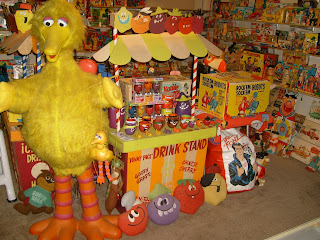
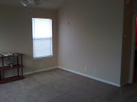

Preparing for Moving Day!
5/19/2011
From Bob Abdou/Mr. Puppet
After living in Austin, Texas for eight years almost to the day, my wife, June, and I are moving to Columbus, Ohio. I will make the final move on August 8th. My summer shows are booked with many travels throughout the state of Texas. At the beginning of August, I will be performing at the Toy and Action Figure Museum in Pauls Valley, Oklahoma (which is one of the coolest toy museums in the count
Then onward to Chicago to perform at the official Beatles Convention (my 17th year in a row). Then comes my final move to Columbus. I plan to continue performing once I settle in, and also start my new pop culture toy museum and stage show. I have to do something with over 3,000 vintage toys and my wife says, "no more in the house" - I agree with her.
The photos are "before" and "after" the packing of one of my toy rooms. I had to personally pack all 3,000+ individual toys so they would stay in display condition during the move. I smell like cardboard and wrapping tape!
Here is the website for my youtube tribute video for all the shows (over 3,ooo) and the folks in Texas. http://www.youtube.com/watch?v=fhmYr1b-iyQ
After living in Austin, Texas for eight years almost to the day, my wife, June, and I are moving to Columbus, Ohio. I will make the final move on August 8th. My summer shows are booked with many travels throughout the state of Texas. At the beginning of August, I will be performing at the Toy and Action Figure Museum in Pauls Valley, Oklahoma (which is one of the coolest toy museums in the count
{kind=link}

ry), then off to the Puppetry Arts Institute in Independence, Missouri (the PAI has the largest collection of Hazelle Puppets).Then onward to Chicago to perform at the official Beatles Convention (my 17th year in a row). Then comes my final move to Columbus. I plan to continue performing once I settle in, and also start my new pop culture toy museum and stage show. I have to do something with over 3,000 vintage toys and my wife says, "no more in the house" - I agree with her.
The photos are "before" and "after" the packing of one of my toy rooms. I had to personally pack all 3,000+ individual toys so they would stay in display condition during the move. I smell like cardboard and wrapping tape!
{kind=link}

Here is the website for my youtube tribute video for all the shows (over 3,ooo) and the folks in Texas. http://www.youtube.com/watch?v=fhmYr1b-iyQ